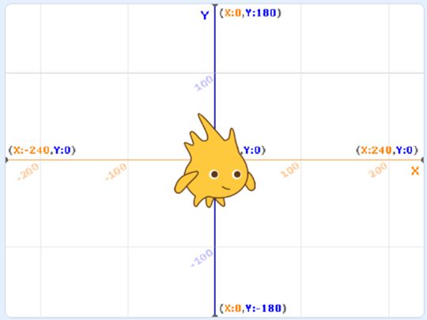
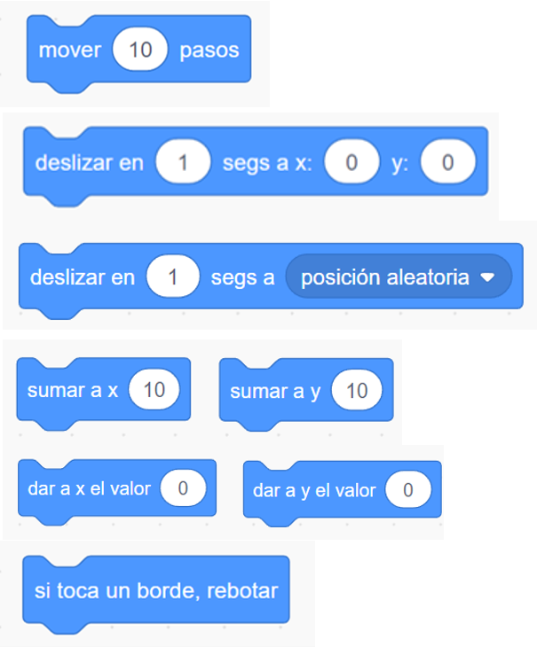
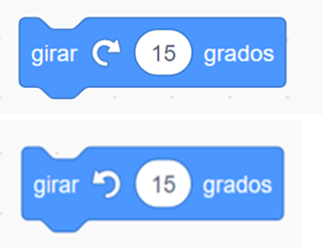
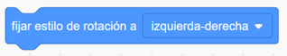
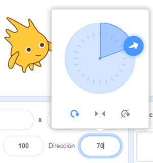
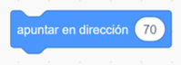
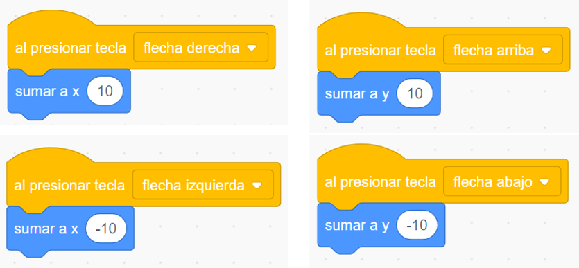

Ha llegado el momento de poner en movimiento a los personajes y objetos de nuestro videojuego, ha llegado la hora de la acción.
En esta página aprenderás a programar las instrucciones necesarias para que los elementos de tu videojuego se muevan por el escenario como tú quieras.
Presta mucha atención, cada vez estamos más cerca de saber todo lo necesario para conseguir nuestro reto y vencer al villano.
1. Aprende a moverte
Ya has observado los movimientos y acciones de la mayoría de los videojuegos.
Vamos a programar los movimientos y desplazamientos que controlarán los objetos y personajes.
En las siguientes pestañas tienes los contenidos más básicos sobre los movimientos necesarios para que funcione bien el juego:
Posición
Con el bloque Ir a llevamos a nuestros personajes y objetos a una posición en el plano.
La posición horizontal se controla con la variable x del eje de coordenadas y su posición vertical se controla con la variable y, teniendo como referencia que el centro de la pantalla es la posición (0,0).

Es importante utilizar este bloque para programar la posición de la pantalla en la que el personaje debe aparecer cuando comience a ejecutarse el videojuego o se inicie un nuevo un nivel.
También lo utilizaremos cada vez que queramos un cambio de posición sin que se aprecie un deslizamiento o desplazamiento.
Desplazamientos

Estos son los bloques de la categoría movimiento que podemos utilizar para programar desplazamientos y movimientos:
Mover...pasos: El objeto se situará a la distancia que indica el número de pasos sin que apreciemos dicho desplazamiento.
Deslizar en...segs a x...y...: En esta ocasión el objeto se situará en las coordenadas indicadas deslizándose en el plano.
Deslizar en...segs a posición aleatoria: Se irá desplazando a cualquier posición del escenario. Se utiliza mucho en juegos de persecución en los que un personaje se mueve continuamente en todas direcciones.
Sumar a x... y Sumar a y...: Se incrementará en cada coordenada el valor que indiquemos.
Dar a x el valor... y Dar a y el valor...: El objeto adquirirá el valor indicado en cada coordenada.
Si toca un borde, rebotar: Cada vez que toque un borde el objeto rebotará y cambiará de dirección. Es también muy utilizado en los videojuegos para facilitar los giros y cambios de dirección.
Giros

Los personajes de nuestro videojuego van a realizar giros en muchas ocasiones. utilizaremos para ello estos bloques:
Girar a la derecha...grados
Girar a la izquierda...grados
En los dos casos el objeto realizará un giro en la dirección y grados indicados.
Es importante que indiquemos con el bloque Fijar estilo de rotación a izquierda-derecha que solamente debe rotar de izquierda a derecha, con el objetivo de que no se ponga "patas arriba" cuando realice dicho giro.

Dirección

Como ves en la imagen, cada objeto sabe la dirección a la que apunta. Esta información la encuentras justo encima de donde está situado el objeto insertado. Al hacer clic puedes cambiar esa dirección. Se abre un círculo con una flecha indicando los grados. A medida que el objeto va girando, verás cambiar su valor de dirección.
También puedes cambiar la dirección de un objeto usando el bloque “apuntar en dirección ”, haciendo clic en la ventana del mismo y escribiendo el número que indique la dirección deseada:

Interacción
En los videojuegos es fundamental programar para que los usuarios interactúen con el teclado.
Con el evento Al presionar tecla... seguido de una instrucción de movimiento, crearemos un programa para que cada vez que el usuario que esté jugando pulse las flechas del teclado (izquierda, derecha, arriba o abajo) se modifique la posición del personaje.

De esta forma, cuando el usuario pulse, por ejemplo, la tecla flecha derecha tendremos que aumentar el valor de la coordenada x para que se desplace hacia la derecha. Sin embargo, cuando el usuario pulse sobre la tecla flecha izquierda habrá que reducir el valor de la coordenada x para que se mueva hacia la izquierda.
Haremos lo mismo para las posiciones verticales modificando el valor de la coordenada Y.
Vídeo
En el siguiente vídeo tienes un resumen de los bloques y programas necesarios para realizar movimientos, desplazamientos, giros...
Lectura facilitada
Tú programas los movimientos y desplazamientos
de los objetos y personajes.
Esta es la información de
los movimientos:
Posición
Para mover el personaje u objeto
usa el bloque Ir a.
La posición se mide en dos ejes de coordenadas.
La variable x del eje de coordenadas
es horizontal.
La variable y del eje de coordenadas
es vertical.
El centro es la posición (0,0).
Este bloque se usa cuando:
-Empieza el juego.
-Empieza un nuevo nivel.
-Cambio de posición
sin desplazamiento.
Desplazamientos
Estos son los bloques
para hacer desplazamientos
y movimientos:
1. Mover...pasos.
El objeto se sitúa
donde dice el número de pasos.
No se nota el desplazamiento.
2. Deslizar en...segs a x...y....
El objeto se sitúa
en esas coordenadas.
El objeto se desliza.
3. Deslizar en...segs
a posición aleatoria.
El objeto se desplaza
a cualquier posición.
Se utiliza mucho en
juegos de persecución.
4. Sumar a x... y Sumar a y...
Sirve para aumentar
el movimiento.
5. Dar a x el valor...
y Dar a y el valor…
El objeto sigue
el valor.
6. Si toca un borde, rebotar.
El objeto rebota
cuanto toca un borde.
Giros
Los personajes usan
muchos giros.
1. Girar a la derecha...grados
El objeto gira a la derecha
2. Girar a la izquierda...grados
El objeto gira a la izquierda.
El bloque Fijar estilo de rotación
a izquierda-derecha
hace que no se ponga patas arriba.
Dirección
Cada objeto apunta a una dirección.
Esta información está encima del objeto.
Para cambiar la dirección puedes:
- Hacer clic encima de la posición del objeto.
- Usar el bloque apuntar en dirección.
Interacción
La interacción es usar el teclado
para jugar al videojuego.
Para usar las flechas del teclado
puedes programar con el evento
Al presionar tecla...y un movimiento.
Vídeo
El vídeo explica el uso de movimientos.
Audio
2. Nos movemos sin parar
¡Vamos a movernos, no hay tiempo que perder!
Practica todo lo que has aprendido acerca de los bloques de movimiento, son de los más importantes para programar cualquier proyecto de Scratch y, especialmente los videojuegos.
Te propongo varias opciones para que hagas programas para que los personajes y objetos realicen las acciones más comunes en los videojuegos: desplazamientos, giros, saltos, caídas...
Realiza las opciones en las que te sientas más cómodo o cómoda, pero te aconsejo que las hagas todas, merece la pena.
OPCIÓN A: Recuerda el programa
Lee y completa:
OPCIÓN B: Muévete por la pantalla
Realiza un programa para un personaje en el que se cumpla al menos lo siguiente:
Se sitúe siempre en las coordenadas 0,0 del plano al empezar el juego apuntando en dirección 90.
Se desplace de forma aleatoria por el escenario durante 2 segundos.
Se gire de izquierda a derecha o de derecha a izquierda 90 grados.
OPCIÓN C: Gira sin parar
Realiza un programa para un personaje en el que se cumpla al menos lo siguiente:
Se sitúe siempre en las coordenadas x 90, y-30 del plano al empezar el juego apuntando en dirección -50.
Desplazarse en esa dirección durante un tiempo y si toca el borde, rebotar.
Realice un salto.
Se gire hacia la derecha 45 grados.
OPCIÓN D: Interactúa sin miedo
Realiza un programa en el que el jugador o jugadora interactúe con el teclado:
Cuando el usuario pulse las teclas arriba, abajo, izquierda o derecha el objeto o personaje se desplazará en este sentido avanzando en su posición en el plano.
 Ha llegado el momento de poner en movimiento a los personajes y objetos de nuestro videojuego, ha llegado la hora de la acción.
Ha llegado el momento de poner en movimiento a los personajes y objetos de nuestro videojuego, ha llegado la hora de la acción. Con el bloque Ir a llevamos a nuestros personajes y objetos a una posición en el plano.
Con el bloque Ir a llevamos a nuestros personajes y objetos a una posición en el plano.